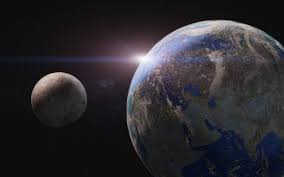

Satélites Naturales
Satelites Naturales

Un satélite natural es un cuerpo celeste que orbita alrededor de un planeta. Generalmente el satélite es más pequeño y acompaña al planeta en su órbita alrededor de su estrella madre. A diferencia de los fragmentos que orbitan formando un anillo, es el único cuerpo en su órbita. El término satélite natural se contrapone al de satélite artificial, siendo este último un objeto que gira en torno a la Tierra, la Luna o algunos planetas y que ha sido fabricado por el ser humano.
En el caso de la Luna, que tiene una masa aproximada a 1/81 de la masa de la Tierra, podría considerarse como un sistema de dos planetas que orbitan juntos (sistema binario de planetas). Tal es el caso de Plutón y su satélite Caronte. Si dos objetos poseen masas similares, se suele hablar de sistema binario en lugar de un objeto primario y un satélite. El criterio habitual para considerar un objeto como satélite es que el centro de masas del sistema formado por los dos objetos esté dentro del objeto primario. El punto más elevado de la órbita del satélite se conoce como apoápside.
Por extensión se llama lunas a los satélites de otros planetas. Se dice «los cuatro satélites de Júpiter», pero también, «las cuatro lunas de Júpiter». También por extensión se llama satélite natural o luna a cualquier cuerpo natural que gira alrededor de un cuerpo celeste, aunque no sea un planeta, como es el caso del satélite asteroidal Dáctilo que gira alrededor del asteroide (243) Ida, etc.
Planetas que tienen lunas
Tierra:
Marte:
Júpiter:
Saturno:
Urano:
Neptuno:
Plutón:
Luna
Deimos y Fobos
Adrastea, Aitné, Amaltea, Ananké, Aedea, Arce, Autónoe, Caldona, Calé, Cálice, Calírroe, Calisto, Carmé, Carpo, Cilene, Elara, Erínome, Espondé, Euante, Eukélade, Euporia, Eurídome, Europa, Ganímedes, Harpálice, Hegémone, Heliké, Hermipé, Herse, Himalia, Ío, Isonoé, Kallichore, Kore, Leda, Lisitea, Megaclite, Metis, Mnemea, Ortosia, Pasífae, Pasítea, Praxídice, Sinope, Táigete, Tebe, Temisto, Telxínoe, Tione, Yocasta, S/2000 J 11, S/2003 J 2, S/2003 J 3, S/2003 J 4, S/2003 J 5, S/2003 J 9, S/2003 J 10, S/2003 J 12, S/2003 J 15, S/2003 J 16, S/2003 J 18, S/2003 J 19, S/2003 J 23, S/2010 J 1, S/2010 J 2, S/2011 J 1 y S/2011 J 2
Aegir, Albiorix, Anthe, Atlas, Bebhionn, Bergelmir, Bestla, Calipso, Dafne, Dione, Egeón, Encélado, Epimeteo, Erriapo, Farbauti, Febe, Fenrir, Fornjot, Greip, Hati, Helena, Hiperión, Hyrokkin, Ijiraq, Jano, Jápeto, Jarnsaxa, Kari, Kiviuq, Loge, Metone, Mimas, Mundilfari, Narvi, Paaliaq, Palene, Pan, Pandora, Pollux, Prometeo, Rea, Siarnaq, Skadi, Skoll, Surtur, Suttungr, Tarqeq, Tarvos, Telesto, Tetis, Thrymr, Titán, Ymir, S/2004 S 7, S/2004 S 12, S/2004 S 13, S/2004 S 17, S/2006 S 1, S/2006 S 3, S/2007 S 2, S/2007 S 3, S/2009 S 1.
Ariel, Belinda, Bianca, Calibán, Cordelia, Crésida, Cupido, Desdémona, Francisco, Ferdinando, Julieta, Mab, Margarita, Miranda, Oberón, Ofelia, Perdita, Porcia, Próspero, Puck, Rosalinda, Setebos, Sicorax, Stefano, Titania, Trínculo y Umbriel
Despina, Galatea, Halimede, Laomedeia, Larisa, Náyade, Nereida, Neso, Proteo, Psámate, Sao, Hipocampo, Talasa y Tritón
Caronte, Hidra, Nix, Cerbero, Estigia